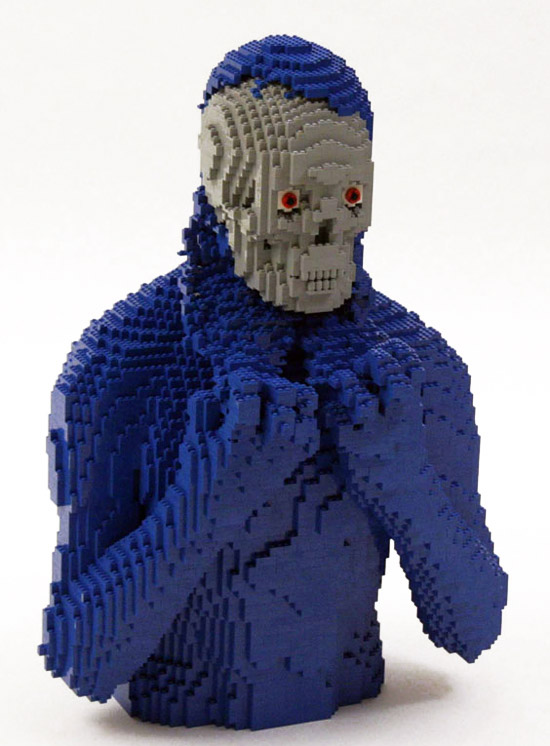

do you appreciate Legos?
good.
so do we.
|  |
do you appreciate Legos?
good.
so do we.
Here at Cam\CREATE, our in-house Lego enthusiast Cameron Lewis creates with Legos, and with a passion you've never seen. With a knack for capturing human emotion in Legos, Cam is able to capture what other artists can't. When Jimmy Fallon asked Cameron "Why Legos?" on The Tonight Show earlier this year, Cameron replied in a way that only Cameron would. "Legos give a distinctive plasticky and pixelated look to my work. And the Millennials love it. They're obsessed with my work like they're obsessed with Minecraft."
Though Cameron has a flair for the dramatic as pictured in his signature works above, he also likes to reproduce famous works by the likes of Michelangelo, Da Vinci, and Rembrandt in Lego as well. Any artist whose name sounds hoighty-toighty or whose works are featured in million-dollar auctions are liable to Cameron's Lego treatment. "Basically the more famous the original artist is, the more, like, famouser I get when I redo their work in Lego. And besides, my work improves upon the originals. Now Mona Lisa is actually looking at something," Cam said to loud cheering at his exhibition last month at New York City's prestigious Museum of Modern Art.
See more of Cameron's work at cam\CREATE here.
Wanna see more of Cam's work every week? Sign up for a weekly email newsletter here:
Also, all these works are made by Nathan Sawaya, a really famous and talented guy. Not Cameron Lewis. He definitely doesn't have these skills.